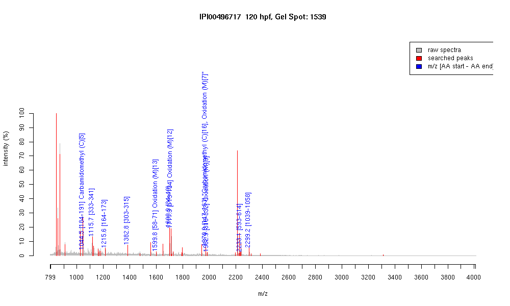

| Name | Vitellogenin 1 |
|---|---|
| MW | 149452.5 |
| PI | 8.68 |
| Mascot Protein Score | 69 |
| Masses (matched / unmatched) | 11 / 35 |

| Peptide | MZ (calc) | MZ (observed) | Error (DA) | Error (PPM) | Start | Stop | Modifications |
|---|---|---|---|---|---|---|---|
| DLSHCQER | 1044.4528 | 1044.4595 | 0.0067 | 6 | 184 | 191 | Carbamidomethyl (C)[5] |
| FVQLVQLLR | 1115.6935 | 1115.7009 | 0.0074 | 7 | 333 | 341 | |
| THYVINEDPK | 1215.6005 | 1215.6019 | 0.0014 | 1 | 164 | 173 | |
| ISDAPAQIVEVLK | 1382.7889 | 1382.7902 | 0.0013 | 1 | 303 | 315 | |
| VLISATTENTYLMK | 1599.8298 | 1599.8273 | -0.0025 | -2 | 58 | 71 | Oxidation (M)[13] |
| YEALLLGGLPQEGLAR | 1699.9377 | 1699.9478 | 0.0101 | 6 | 34 | 49 | |
| VFAPAGVSPTVMNLHR | 1711.8948 | 1711.906 | 0.0112 | 7 | 119 | 134 | Oxidation (M)[12] |
| TQNIYEMQEAGAQGVCR | 1970.8695 | 1970.8823 | 0.0128 | 6 | 147 | 163 | "Carbamidomethyl (C)[16], Oxidation (M)[7]" |
| HLVSNNKDMVHDDAPFK | 1982.9388 | 1982.9462 | 0.0074 | 4 | 316 | 332 | Oxidation (M)[9] |
| SLTRITAPDMAYVAGAANVAIK | 2233.2009 | 2233.1062 | -0.0947 | -42 | 593 | 614 | |
| QINIIDDDTPEGQAFLLKLR | 2299.2292 | 2299.168 | -0.0612 | -27 | 1039 | 1058 |